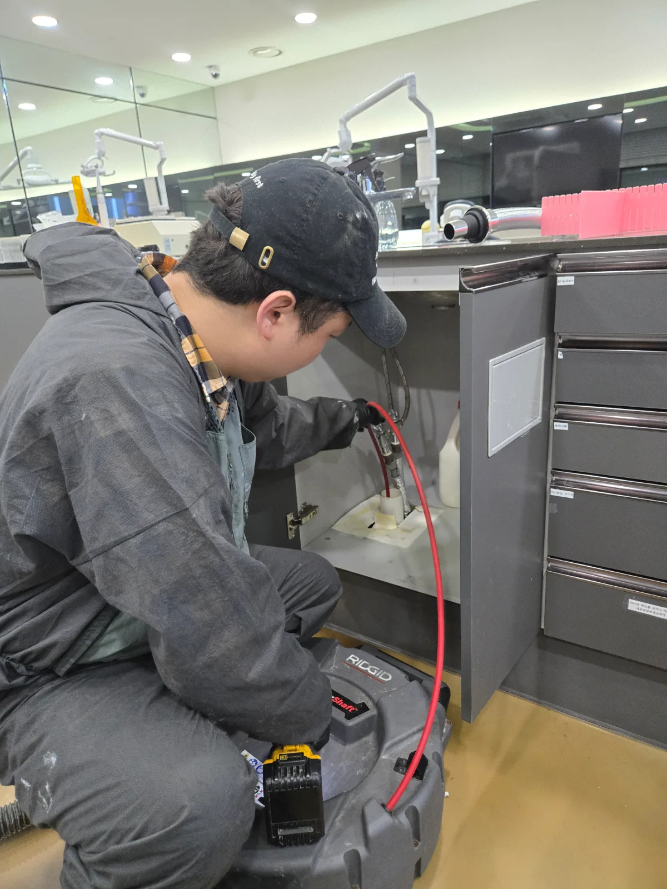

영등포구 당산동 하수구막힘, 현장 도착 후 진단
영등포구 당산동 치과 하수구막힘 현장에 도착해 내부 배수 상태와 건물의 배관 구조를 확인했습니다. 이번 당산동 현장은 치과가 건물 2층에 위치해 있었고, 막힘 구간은 치과 내부 배수구에서 아래층 로비 천장 내부로 이어지는 하부 배관에 형성돼 있었습니다.
먼저 2층 치과 내부에서 정확한 작업 지점을 확보했지만 배관의 굴곡과 길이 때문에 상부 한 방향에서만 작업해서는 막힘 전체를 제거하기 어려웠습니다. 영등포구 상가 하수구막힘 현장은 이처럼 위층 사업장과 아래층 천장 배관을 함께 확인해야 정확한 해결이 가능한 경우가 있습니다.
완전한 통수 복원을 위해 아래층 로비 화장실 천장을 개방하고 2층 치과의 하부 배관에도 접근하기로 했습니다. 천장 내부 배관은 높은 위치에 설치돼 있고 작업 공간도 협소해 안전사고와 주변 오염에 각별히 주의해야 하는 고난도 당산동 배관 작업이었습니다.
1단계: 증상 확인과 필요한 장비 작업
영등포구 당산동 치과 내부에서 막힌 배관의 진입 지점을 확보하고 리지드 K9-102 플렉스샤프트를 투입했습니다. 샤프트를 배관 안쪽으로 세밀하게 진입시키며 굴곡 구간에 쌓인 침전물과 이물질을 분쇄하고 상부 배관을 스케일링했습니다.
하지만 깊은 하부 구간까지는 한 방향 작업만으로 완전히 접근하기 어려웠습니다. 당산동 치과 하수구막힘을 확실하게 해결하기 위해 아래층 천장 배관에서 추가 작업을 진행했습니다.

2단계: 원인 구간 처리와 정상 작동 확인
아래층 로비 화장실 천장을 개방해 2층 치과의 하부 배관 위치를 확인했습니다. 고소작업으로 배관 접근부를 확보한 뒤 작업 구역을 보양하고 리지드 K9-204 플렉스샤프트를 반대 방향으로 투입했습니다.
치과 내부의 K9-102 작업과 아래층 천장 내부의 K9-204 작업을 연계해 위와 아래 양쪽에서 막힘 구간을 반복적으로 스케일링했습니다. 오랜 작업 끝에 배관 내부의 침전물과 이물질을 제거하고 충분한 물을 흘려보내 영등포구 당산동 하수구의 정상적인 배수 상태를 확인했습니다.

작업 결과와 재발 방지 안내
당산동 치과 내부와 아래층 천장 배관에서 양방향 샤프트 작업을 진행해 심하게 막힌 배수관의 통수 기능을 회복했습니다. 이번 영등포구 하수구막힘 현장은 배관 위치가 높고 천장 내부 작업이 필요해 위험성과 작업 난도가 모두 높았지만, 배관 구조에 맞춰 리지드 K9-102와 K9-204를 각각 투입해 해결할 수 있었습니다.
영등포구 당산동처럼 상가와 의료시설이 밀집된 건물의 2층 이상에서 반복적인 하수구막힘이 발생한다면 내부 배수구뿐 아니라 아래층 천장에 설치된 수평 배관까지 점검해야 합니다. 신라건축설비는 당산동 치과 하수구막힘과 복잡한 상가 배관 문제도 정확한 진단과 전문 장비로 늘 당신 곁에서 해결해드리겠습니다.
최종 조치: 2층 치과 내부의 막힘 지점을 확인해 리지드 K9-102로 상부 배관을 작업했습니다. 이어서 아래층 로비 화장실 천장을 개방하고 하부 배관에 접근해 리지드 K9-204로 반대 방향에서 배관스케일링을 진행했습니다. 위와 아래에서 막힘 구간을 양방향으로 작업해 배수 기능을 정상적으로 복원했습니다.
현장 방문 전 확인하는 비용과 작업 범위
신라건축설비는 현장 증상과 배관 구조를 확인한 뒤 필요한 작업과 예상 비용을 안내합니다. 단순 관통으로 해결되는지, 배관내시경·석션·고압세척 또는 추가 장비가 필요한지는 현장 상태에 따라 달라집니다. 출장비와 야간 작업비, 추가 장비 비용이 발생할 수 있는 경우 작업 전에 먼저 설명하고 동의를 받은 범위에서 진행합니다.
업체를 선택할 때 확인할 사항
무조건적인 ‘0원’ 표현보다 실제 작업 범위, 추가 비용 조건, 사용 장비와 사후 대응 기준을 확인하는 것이 중요합니다. 해결되지 않았을 때의 비용 기준과 작업 후 동일 증상 발생 시 점검 범위를 사전에 문의해두면 불필요한 분쟁을 줄일 수 있습니다.
영등포구 하수구막힘 자주 묻는 질문
여러 배수구가 동시에 역류하면 공용배관 문제인가요?
건물 2층에 위치한 치과 내부 하수구의 배수가 원활하지 않고 물이 정체되는 증상이 발생했습니다. 치과 내부에서만 작업해서는 막힘 구간에 충분히 접근하기 어려워 아래층 천장 내부의 하부 배관까지 함께 작업해야 하는 상황이었습니다.처럼 증상이 나타나더라도 원인은 현장마다 다를 수 있습니다. 장비와 배관 구조를 확인한 뒤 필요한 작업 범위를 안내합니다.
고압세척이 항상 필요한가요?
작업 전 증상과 현장 여건을 확인해 예상 범위와 비용을 먼저 안내합니다. 변기 탈거, 장비 추가 투입 또는 공용배관 작업이 필요한 경우 고객 동의 없이 임의로 진행하지 않습니다.
작업 전 추가 비용을 확인할 수 있나요?
완료 후 정상 작동을 함께 확인하고 작업 범위에 따른 사후 안내를 드립니다. 동일 증상이 반복되면 현장 기록을 기준으로 원인을 다시 점검합니다.
하수구막힘 서울·경기 출동지역
신라건축설비는 영등포구 당산동 현장을 포함해 서울 25개 구와 경기도 31개 시·군의 배관 문제를 상담합니다. 현장 거리와 기사 배정 상황에 따라 출동 가능 여부를 먼저 안내드립니다.
서울 전 지역
강남구 · 강동구 · 강북구 · 강서구 · 관악구 · 광진구 · 구로구 · 금천구 · 노원구 · 도봉구 · 동대문구 · 동작구 · 마포구 · 서대문구 · 서초구 · 성동구 · 성북구 · 송파구 · 양천구 · 영등포구 · 용산구 · 은평구 · 종로구 · 중구 · 중랑구
경기도 주요 출동지역
수원시 · 용인시 · 고양시 · 화성시 · 성남시 · 부천시 · 남양주시 · 안산시 · 평택시 · 안양시 · 시흥시 · 파주시 · 김포시 · 의정부시 · 광주시 · 하남시 · 광명시 · 군포시 · 양주시 · 오산시 · 이천시 · 안성시 · 구리시 · 의왕시 · 포천시 · 양평군 · 여주시 · 동두천시 · 과천시 · 가평군 · 연천군